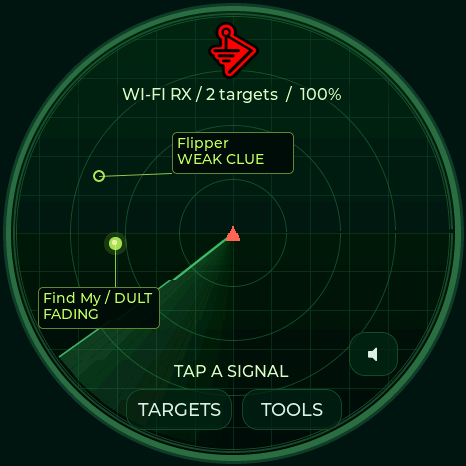
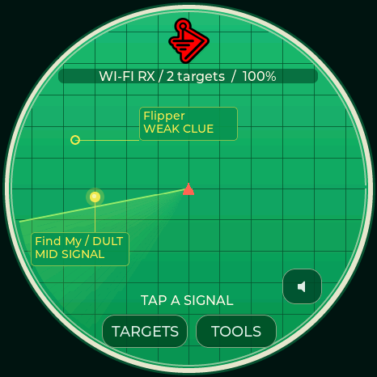
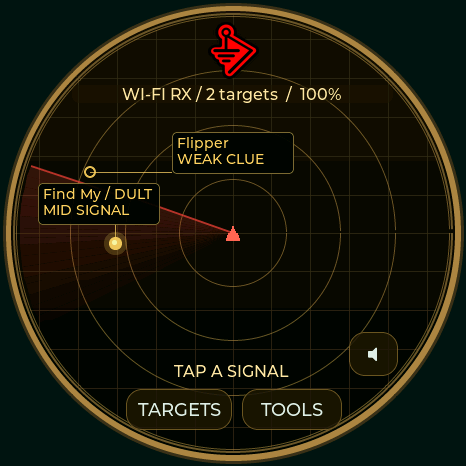

VALLEYTECH / DETECTION / HUNT EDITION / 0.8.0
Carry your
radar.
Three radar themes. A little more awareness.
Device signatures, signal hunts, and local history.
Your pocket radar, with evidence behind every match.

ACTUAL WAVESHARE DISPLAY RENDER · 0.7
Notice the signal.Fresh candidate signatures, with evidence.
Follow the change.Filtered RSSI and dedicated target listening.
Keep the evidence.Local history, watch lists, and USB CSV export.


Every plotted dot has a label and leader. Six labeled signals per radar page keep crowded scans readable. Choose a theme in Settings or the USB controls below; recent signals show their last-seen age.
01 / GET STARTED
One radar. Three boards.
Desktop Chrome or Edge · USB data cable
Select the exact model printed on your device.
0.8.0 experimental preview. All three profiles compile and pass automated checks. Waveshare and M5Stack display, touch and USB badge storage have basic hardware checks. Spotpear hardware and all-day battery runtime still need testing. View validation status →
Choose your board above
Each model needs its own firmware. The ESP32-S3 chip check cannot identify your display wiring.
Select a board to load its release.
Connection & recovery
Close other serial monitors before connecting. On M5Stack StopWatch, hold the power button for about two seconds until the green LED lights, then release. On Spotpear/Waveshare, hold BOOT, tap RESET, release BOOT, then reconnect. Select the matching USB port. A first installation initializes the badge filesystem; back up existing firmware before replacing it. Use Update only with this board's existing 0.3.x / 0.4.x / 0.5.x / 0.6.x / 0.7.x / 0.8.x partition layout. Reset after installation if the board stays in the bootloader.
02 / FIELD TOOLS
Keep your radar ready.
Firmware 0.4.x or newer · local USB connection
No account or cloud upload.
History & device controls
Connect to sync the UTC clock. Download detection history, return to the radar, or adjust display timers. Detection keeps running when the screen dims or turns off.
Connect a board running 0.4.x or newer. CSV contains the full stored evidence; display privacy only masks the device screen.
Display preferences
Radar appearance
03 / LISTEN TO THE SIGNAL
A sound for every signature.
Short, original alert melodies.
RTTTL settings saved on your detector.
Audio & foxhunting
Connect using Detector tools above. During a hunt, stronger signals produce higher, faster pulses. Axon has a double heartbeat; a falling two-note cue means the signal was lost. RSSI is not distance.
Focus follows the strongest matching candidate with switching hysteresis. Flock focus also includes ALPR vendors and Raven. A manually selected Hunt target takes priority. Quiet mode mutes automatic audio.
Speaker output requires working audio hardware and a connected speaker.
Device alert editor
Format: name:d=duration,o=octave,b=tempo:notes. Up to 512 characters, 96 notes, 15 seconds; octaves 4–7. Use p for a rest and # for a sharp. Leave blank to silence this family’s alert melody. Saving does not play it.
Preview plays once at the selected device volume, including in quiet mode. The master switch controls automatic alerts. No browser or cloud audio upload is needed.
04 / MAKE IT YOURS
Your art. Your badge.
Crop locally in your browser.
Your image goes directly to your board over USB.
1 Choose your display
Preview any board now. Connecting USB selects and locks the detected model.
2 Make it fit
Fine positioning
3 Wear your badge
Connect current Dragon Detector firmware. Upload saves the image on your device; scanning continues in badge mode.
Hold the displayed badge to open tools. Choose Show radar in Detector tools to return to scanning view.
KNOW WHAT YOU’RE SEEING
Evidence, at a glance.
Looks for Flock, Axon, Raven, camera glasses, Find My and Google Find Hub accessories, SmartTags, Tile, Ring/camera/ALPR vendor candidates, drone Remote ID, Flipper, Wi-Fi Pineapple, Pwnagotchi, Nyanbox, Biscuit, and Wi-Fi deauthentication/disassociation and BLE spam candidates. A match does not establish malicious intent, recording state, or a device's owner.
AirTag and Biscuit Pro/Ultra models cannot always be distinguished. RSSI is signal strength, not distance; the radar angle is decorative. Silent radios and 5/6 GHz devices remain outside coverage.
Read the detection evidence →Check your Flipper or Pineapple Pager →
Radar, hunt & traffic guide →